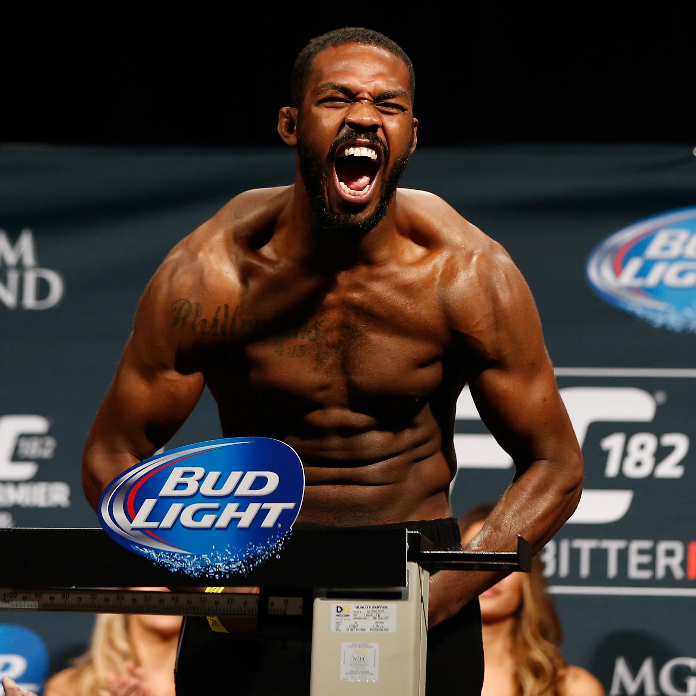

Досье бойца

| Параметр | Значение |
|---|---|
| Рост | 193 см |
| Размах рук | 215 см |
| Категория | Полутяжёлый / Тяжёлый вес |
| Стойка | Ортодоксальная |
Ключевые навыки
- Контроль дистанции. Длинные руки и работа ногами сдерживают соперников.
- Борьба у клетки. Хорошо контролирует клинч и умеет переводить в партер.
- Граунд-энд-паунд. Наносит много разрезающих ударов сверху.
- План на бой. Подстраивается под стиль оппонента во время поединка.
Рекорд в UFC
| Победы | 27 |
|---|---|
| Поражения | 1 (за запрещённый приём) |
| Ничьи | 0 |
| NC | 1 |
Интересный факт
Как проходит неделя подготовки
Утренний спарринг по вторникам, борьба и контроль у сетки по средам, разбор соперника и визуализация вечером. Перед боем — лёгкий кикбоксинг и растяжка.
Легендарные бои
- vs. Маурисиу “Шогун” Руа (UFC 128): завоевал титул полутяжёлого веса, доминируя весь бой.
- vs. Александр Густафссон (UFC 165): тяжёлый пятираундовый поединок, который многие называют лучшим в карьере.
- vs. Дэниел Кормье (UFC 214): зрелищный реванш с жёстким завершением и ярким послевкусием.
- vs. Сирил Ган (UFC 285): вернулся после перерыва, задушил соперника в первом раунде и взял пояс тяжёлого веса.
Цитаты
“Fighting is not what I do - it's who I am. It's what I was meant to do, what I was meant to be. I knew that right after my first MMA practice.”
“I take it so seriously as far as meditation, notes, visualization, preparation, everything. I take it a lot more serious than a lot of people that play this sport. I’m obsessed with the game that I play.”
“I’m beating all the weakness out of myself, beating all the give-up out of myself, I’m beating the lack of cardio, I’m beating the lack of confidence – any sign of weakness that’s in my heart, I’m getting rid of it.”